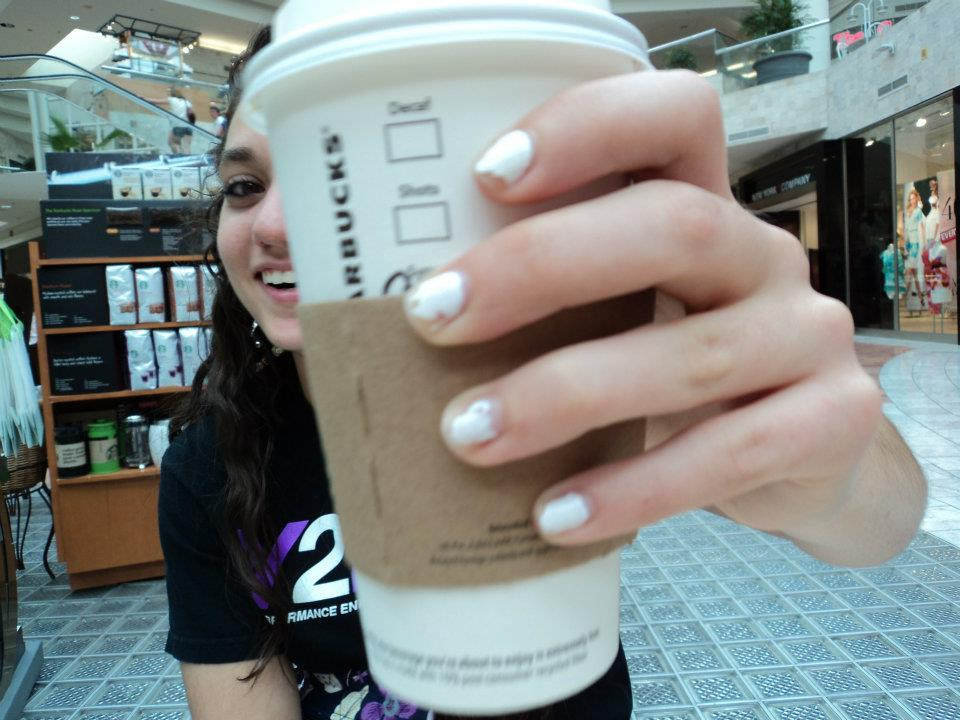
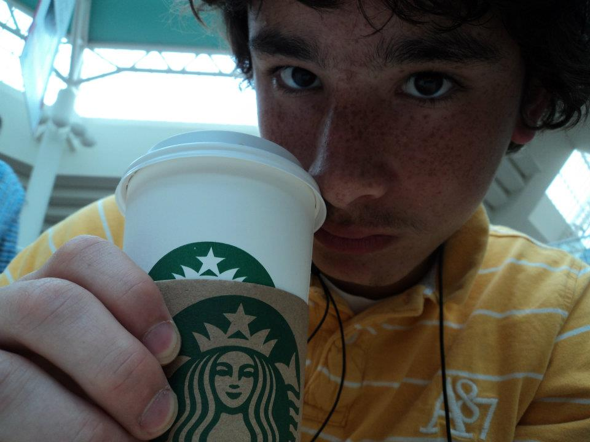
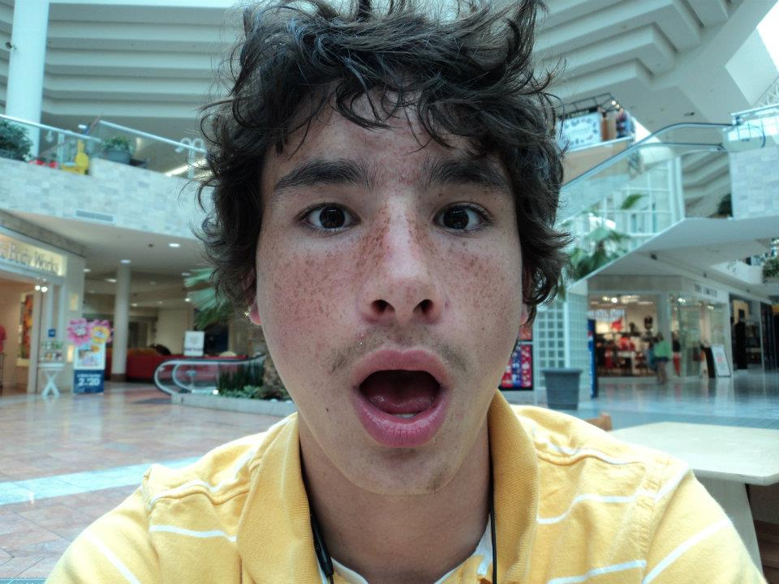
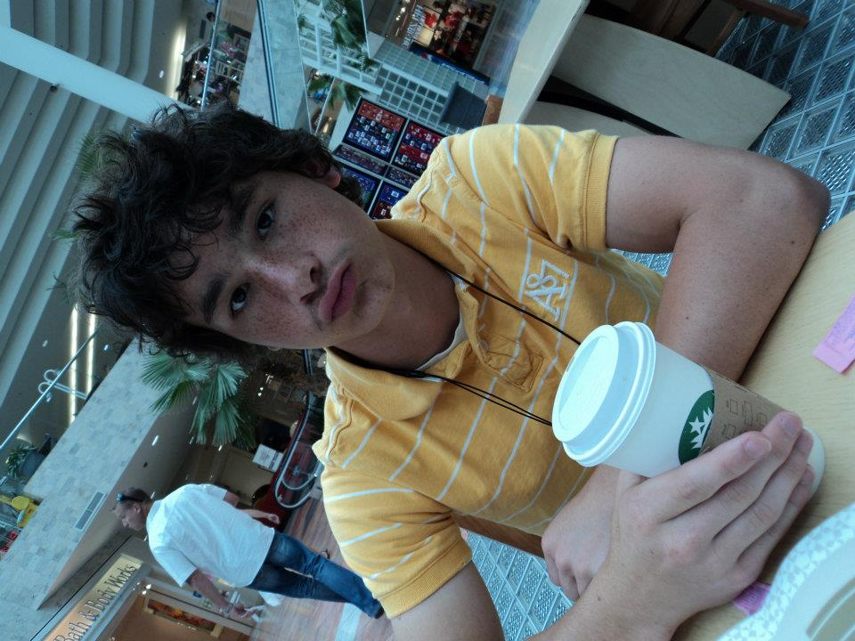
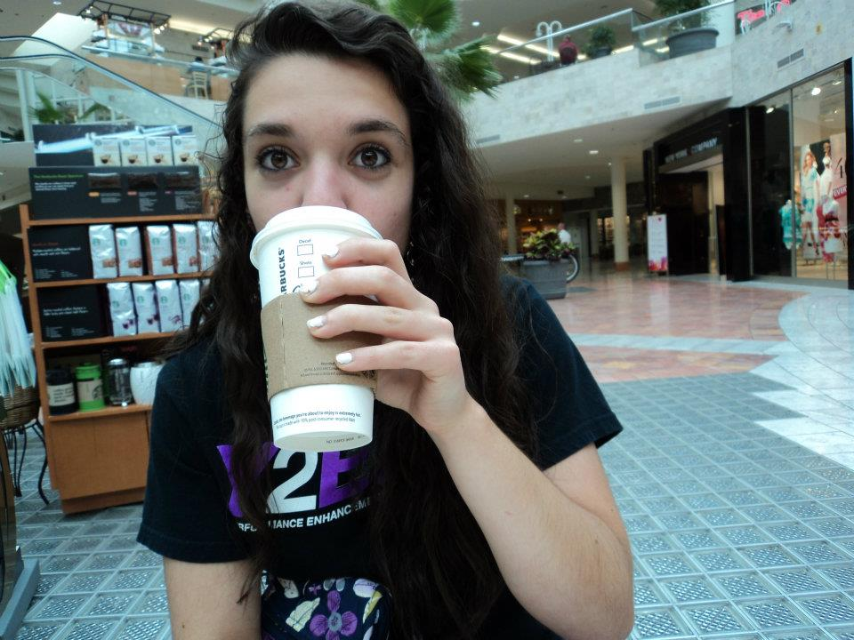
Remember when there was actually a Starbucks in the mall? Remember how we had to get dropped off at the mall? I was too nervous to kiss you back then. You're the one that really introduced me to Starbucks, and now it's our go-to coffee place. Since we began dating, I think Zach is the only barista at Starbucks that has continued to work there since the beginning. We've shared a lot of memories here and I'm very grateful.
Taking it To-Go
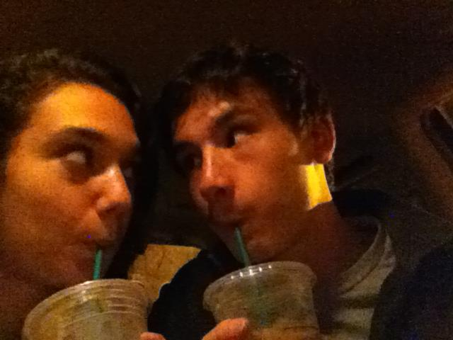
Finally, I started driving. Then, we could just grab a Starbucks to go also. Sometimes we would just grab it to go and sit in the parking lot - even at night when it was sometimes scary.
Omaha Henry Doorly Zoo
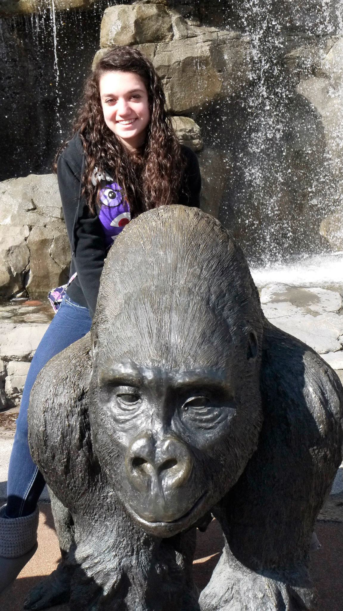
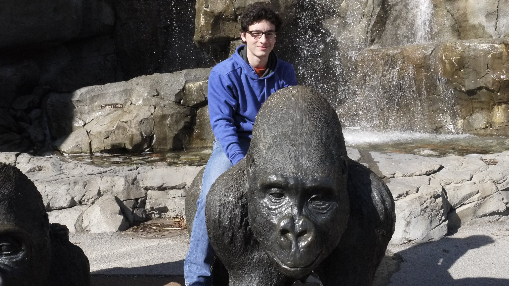
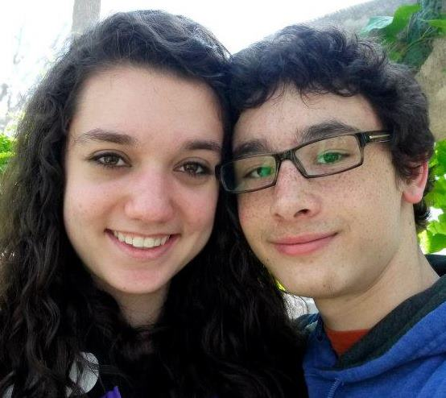
One day, we got to go to the zoo together. We looked at everything - from the monkeys, to the sea lions, to the butterflies. Going anywhere with you is exciting. I'm always glad to go back to the zoo with you.
Pre-Calc with Mr. White
In the mornings, we would sit right outside your locker. We also had a class together - Pre-Calc with Mr.White, who was one of my favorite teachers. He did all those magic tricks! My favorite part about having a class with you was being able to study together, mostly in the Starbucks we so commonly visitied.
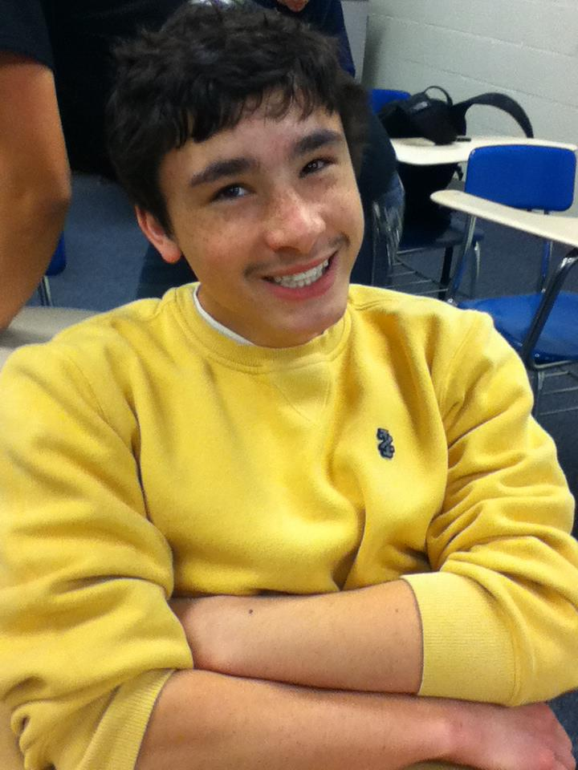
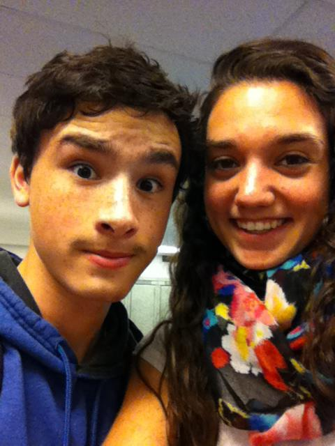
More Fishing
There I am in those zebra shorts! Looks like we caught matching fish! Nice fishing hat by the way! You also caught a bass and some trash! You should smile like that more often ;)
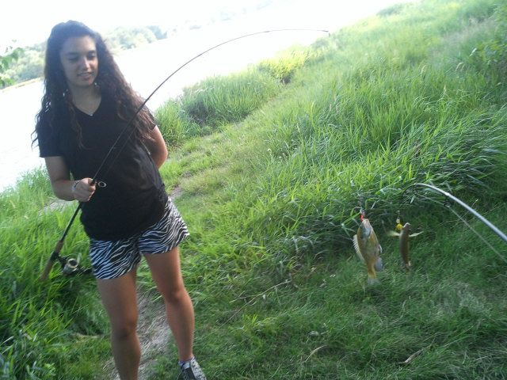
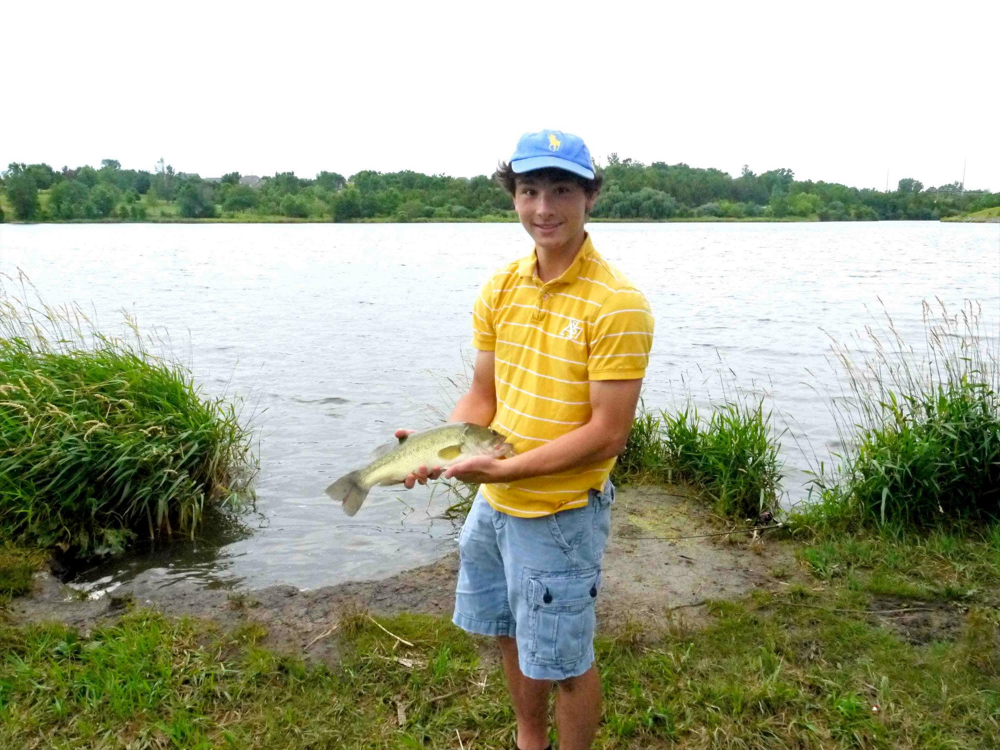
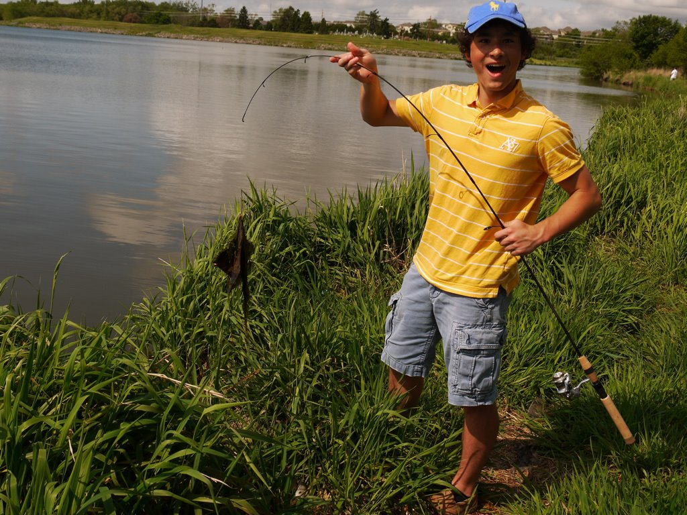
Designated Driver
Come June, I finally got my driver's liscense. Lucky for Jeffrey, I was able to drive us around everywhere in a classy, blue Honda Oddyssey. We went to Starbucks, the mall, the grocery store, lakes for fishing, and so much more.
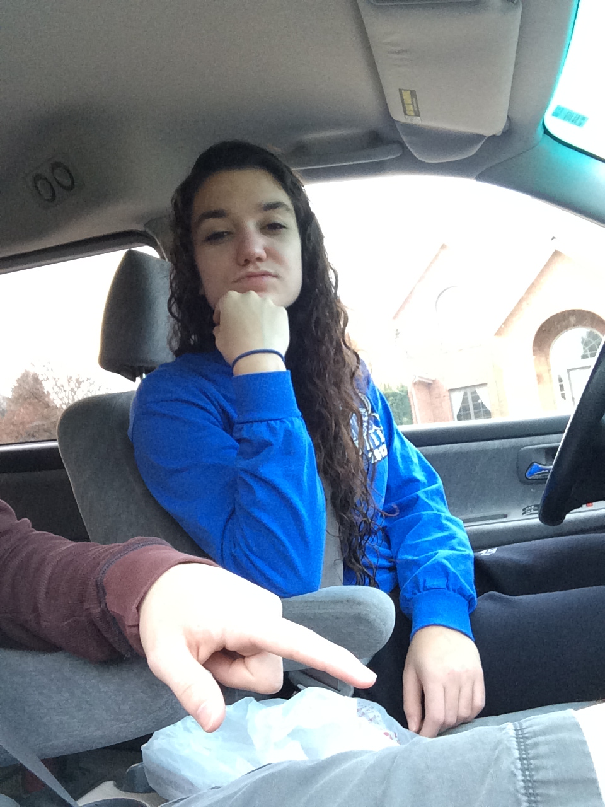
Jeffrey is Looking Good
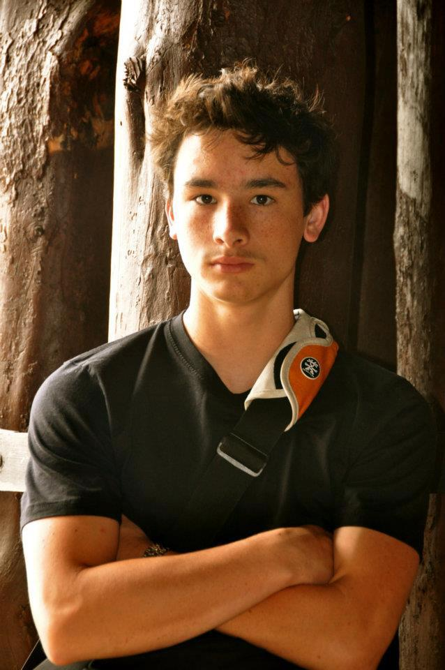
You look good here. I think this is another picture at the zoo. I'm not sure... However, I am sure that I can take the photocred for this fine looking photo. You were obviously the one looking forward to taking the photos. You're really good at taking and also editing photos.